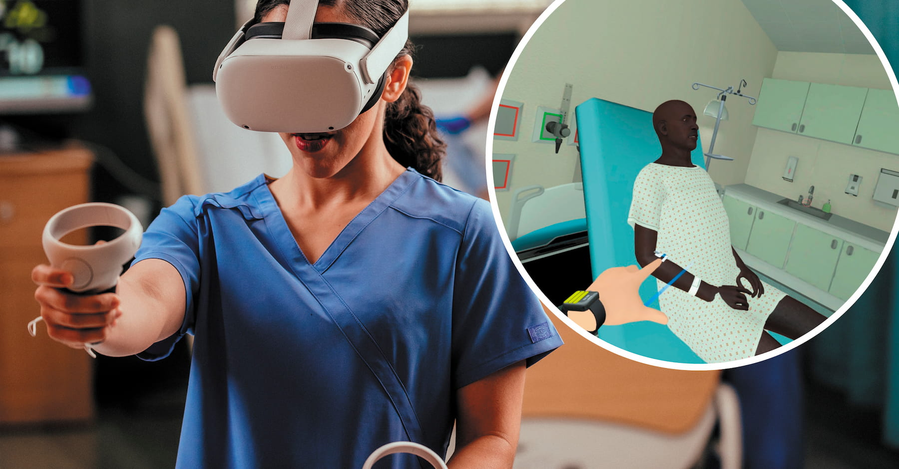

Primer Slide


Augmented Reality (AR) is rapidly advancing in 2024. AR-based gaming is expanding, offering more immersive and interactive experiences. Wearable AR devices like Vision Pro and Quest 3 provide clear views and natural interactions, making AR more accessible. In education, AR enhances learning by allowing teachers and students to create and interact with projects easily. Retailers are using AR to offer enhanced, personalized shopping experiences, letting customers visualize products at home or try on clothes virtually.